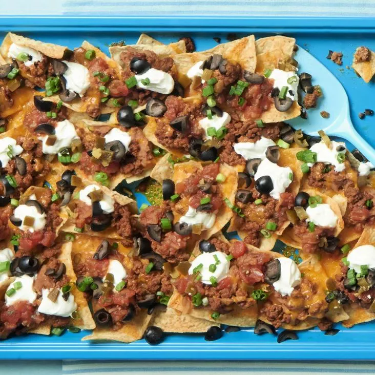

Super Nachos

What's on these nachos?
These nachos are topped with seasoned ground beef, shredded Cheddar
cheese, canned refried beans, chopped tomatoes, canned black olives,
salsa, sour cream, green onions, and sliced jalapeño peppers.
Other delicious options include shredded chicken, barbacoa, guacamole,
cotija cheese, corn, pico de gallo, shredded lettuce, diced onions,
pickled red onions, and/or black beans.
Ingredients
- Aluminium foil
- 1 pound ground beef
- 3/4 cup water
- 1 (1.25 ounce) package taco seasoning mix
- 1 (18 ounce) package restaraunt-style tortilla chips
- 1 cup shredded sharp Cheddar cheese, or more to taste
- 1 (15.5 ounce) can refried beans
- 1 (10 ounce) can pitted black olives, drained and chopped
- 1 cup salsa
- 1 cup sour cream, or more to taste
- 4 green oinions, diced
- 1 (4 ounce) can sliced jalapeño peppers, drained
Steps to make Super Nachos
- Preheat the oven broiler. Set the oven rack about 6 inches from the heat source. Line a baking sheet with aluminium foil.
- Gather all ingredients
- Cook and stir ground beef in a skillet over medium heat until meat is crumbly and no longer pink, 5 to 10 minutes. Drain excess grease. Stir in water and taco seasoning mix; simmer until beef mixture has thickened, 8 to 10 minutes.
- Spread tortilla chips on the prepared baking sheet. Top with Cheddar cheese, then dot with refried beans and ground beef mixture.
- Broil in the preheated ovenuntil cheese is melted,3 to 5 minutes. Top nachos with olives, salsa, sour cream, green onions, and jalapeño peppers.